| Module name | Digital Signal Processing |
| Module code | COU 07506 |
| Class | BEng24COE |
| Work | Individual laboratory report |
| Student name | Zaid Yaseer Yussuf |
| Registration number | 240242479517 |
| Date | 26 November 2026 |
signal.decimate (right).lfilter and the closed form.This report covers the four laboratory sessions of Weeks 1 to 4 of the module (Tasks 1.1 to 4.5). The objectives were as follows.
np.convolve;lfilter and to compare with the closed form.residuez and check it against lfilter;A discrete-time signal x(n) is defined only at integer values of n and is stored as an index array and a value array. The elementary sequences used are the unit impulse δ(n), the unit step u(n), the unit ramp r(n) = n·u(n) and the real exponential anu(n).
A discrete-time cosine cos(2πf0n) is periodic only if f0 is a rational number k/N, in which case the fundamental period is N samples (k and N having no common factor). A sampled audio signal is a sequence of numbers together with a sampling rate fs. A recording of duration T contains N = fsT samples, and frequencies up to fs/2 can be represented.
Sampling at fs represents frequencies only up to fs/2. A component at F > fs/2 appears at the alias frequency Falias = |F − kfs|, where k is the integer nearest to F/fs. Once aliasing has occurred, the alias cannot be distinguished from a genuine component at that frequency. An anti-aliasing low-pass filter must therefore remove the content above fs/2 before the samples are taken or discarded.
A uniform B-bit quantiser with range ±Xm has step Δ = 2Xm/2B and error variance Δ2/12. For a full-scale sinusoid, SQNR ≈ 6.02B + 1.76 dB, so each extra bit adds about 6 dB. The measured SQNR is 10 log10(Σx2/Σe2), where e(n) = x(n) − xq(n).
The output of an LTI system is y(n) = Σkx(k)h(n − k). For sequences of length L
and M the result has L + M − 1 samples and the direct computation needs L·M
multiplications. A system is linear if T{ax1 + bx2} = aT{x1} +
bT{x2} and time-invariant if a delay of the input only delays the output by the
same amount. The cross-correlation rxy(l) = Σnx(n)y(n − l) has its
maximum at the lag where the two signals are most similar, which gives the delay between
them. A difference equation y(n) = Σbkx(n − k) − Σaky(n − k) is
implemented by lfilter(b, a, x); its steady-state response to a unit step is
H(1) = Σb/Σa.
A causal LTI system is BIBO stable if its impulse response h(n) is absolutely summable, that is Σ|h(n)| < ∞. For H(z) = B(z)/A(z) the roots of B are the zeros and the roots of A are the poles. A causal system is BIBO stable if and only if all poles satisfy |p| < 1. A pole pair at re±jθ produces a resonance near ω = θ whose bandwidth is about 2(1 − r) rad/sample, so it becomes sharper as r → 1. A zero on the unit circle produces a null in the magnitude response.
For a second-order denominator A(z) = 1 + a1z−1 + a2z−2 the poles are inside the unit circle if and only if |a2| < 1 and |a1| < 1 + a2 (the stability triangle). The inverse z-transform of a rational function with distinct poles pi and residues ri is h(n) = Σripin.
A computer with Python 3, Jupyter Notebook, NumPy, SciPy (signal.tf2zpk,
signal.freqz, signal.residuez, signal.lfilter) and
Matplotlib was used throughout. GNU Octave was used for Task 1.4. The four notebooks were
restarted and run from top to bottom; their exported numbers are used directly in this
report.
data/my_voice.wav. It is a stand-in, not a new recording, and is used only in
Week 1. Lab 1A uses the manual's fallback chirp and synthetic speech-like signal so that
the results are reproducible.The sequences δ(n), u(n), r(n) and (0.8)nu(n) were generated for −5 ≤ n ≤ 10
with NumPy and plotted as stem plots ( 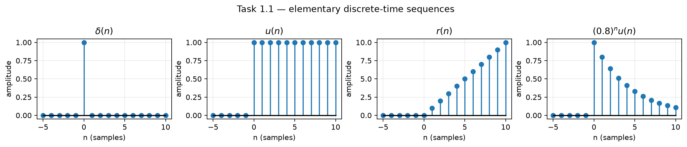
| Sequence | Definition | Observed behaviour |
|---|---|---|
| δ(n) | 1 for n = 0, otherwise 0 | Single sample of value 1 at n = 0 |
| u(n) | 1 for n ≥ 0, otherwise 0 | Steps to 1 at n = 0 and remains 1 |
| r(n) | n·u(n) | Increases linearly; r(10) = 5 |
| (0.8)nu(n) | 0.8n for n ≥ 0 | Geometric decay from 1; value 0.3277 at n = 10 |
Table 1: Elementary sequences.
(a) The sequence anu(n) was plotted for a = 0.5, −0.8 and 1.1 ( 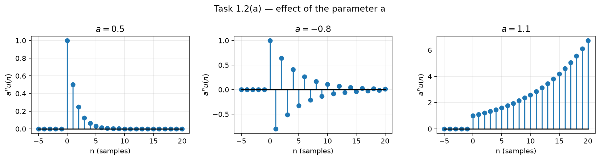
| a | Behaviour | Value at n = 20 |
|---|---|---|
| 0.5 | Monotonic decay (0 < a < 1) | 1e-06 |
| −0.8 | Decaying, alternating sign (−1 < a < 0) | 0.01153 |
| 1.1 | Monotonic growth (a > 1) | 6.7275 |
Table 2: Effect of a on anu(n).
(b) The sequences cos(2πn/8) and cos(2πn/7.5) were plotted for 0 ≤ n ≤ 40 ( 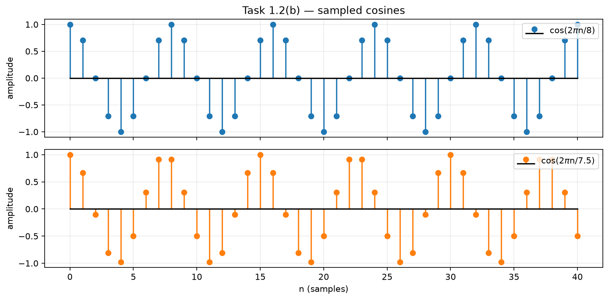
| Sequence | f0 (cycles/sample) | Fundamental period |
|---|---|---|
| cos(2πn/8) | 1/8 | N = 8 samples |
| cos(2πn/7.5) | 2/15 | N = 15 samples |
Table 3: Periodicity of the two cosines.
Both sequences are periodic, since both frequencies are rational. The second has a longer period because 7.5 is not an integer. This was verified numerically by confirming x(n + N) = x(n) for N = 8 and N = 15.
The WAV file was read with 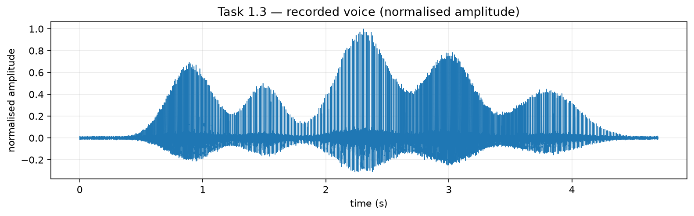scipy.io.wavfile.read, converted to mono where
necessary and normalised to the range [−1, 1]. The parameters are given in Table 4 and the
waveform in
| Parameter | Value |
|---|---|
| Sampling rate fs | 16,000 Hz (Nyquist frequency 8,000 Hz) |
| Duration T | 4.70 s |
| Number of samples N | 75,200 (= fs · T) |
| Original format | int16, mono (reproducible speech-like stand-in) |
| Peak amplitude after normalisation | 1.0 |
Table 4: Parameters of the audio signal. The original phone recording was not supplied; the stand-in is declared in Section 7.
The signal consists of several bursts separated by lower-amplitude intervals. Within each burst the amplitude varies with each syllable, which is characteristic of speech.
The sequences of Task 1.1 were implemented in Octave with the script in Appendix A. The main syntactic differences from Python are given in Table 5.
| Feature | Python (NumPy) | Octave |
|---|---|---|
| Index origin | 0 | 1 |
| Range −5 to 10 | np.arange(-5, 11) | -5:10 |
| Logical to numeric | .astype(float) | double() |
| Element-wise product / power | * and ** | .* and .^ |
| Multiple plots | plt.subplots() | subplot(r, c, k) |
Table 5: Python and Octave syntax differences.
A 7 Hz cosine was plotted on a dense time grid (the “analog” signal) together with its
samples and the predicted alias for fs = 10, 12, 14 and 20 Hz ( 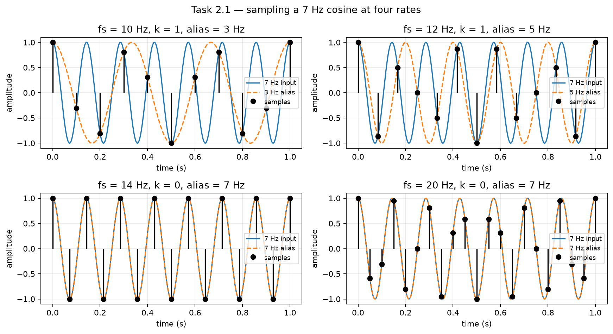
| fs (Hz) | k = round(F/fs) | |F − kfs| (Hz) | Observed alias (Hz) | Comment |
|---|---|---|---|---|
| 10 | 1 | 3 | 3 | aliased |
| 12 | 1 | 5 | 5 | aliased |
| 14 | 0 | 7 | 7 | no alias / Nyquist limit |
| 20 | 0 | 7 | 7 | no alias / Nyquist limit |
Table 6: Alias frequency of a 7 Hz tone for different sampling rates.
For fs = 10 Hz and 12 Hz the samples of the 7 Hz tone coincide exactly with those of a 3 Hz and a 5 Hz cosine respectively, so the alias curve passes through every sample. At fs = 14 Hz the tone lies exactly on fs/2: the samples alternate in sign and the frequency is not folded, but the sampled amplitude depends on the phase, so this case is borderline. At fs = 20 Hz the sampling theorem is satisfied and no alias exists.
The chirp (RMS 0.354) was decimated by k = 2, 4 and 8, first by keeping every k-th sample
and then with signal.decimate(x, k, ftype="fir"), which low-pass filters before
discarding samples. Table 7 compares the RMS values. The “predicted” column is the input RMS
multiplied by the square root of the fraction of the sweep that lies below the new Nyquist
frequency.
| k | New fs (Hz) | RMS, x[::k] (no filter) | RMS, decimate (FIR) | RMS predicted for filtered |
|---|---|---|---|---|
| 2 | 22050 | 0.353 | 0.297 | 0.302 |
| 4 | 11025 | 0.353 | 0.208 | 0.212 |
| 8 | 5512.5 | 0.352 | 0.144 | 0.147 |
Table 7: RMS of the decimated chirp with and without an anti-aliasing filter.
Without a filter the RMS stays at about 0.35 for every k: nothing is removed, and all the
energy above the new Nyquist frequency is folded into the band. With the filter the RMS
falls to 0.144 for k = 8, close to the predicted
0.147, because only the first part of the sweep
(200 Hz to 2756 Hz) can be represented. 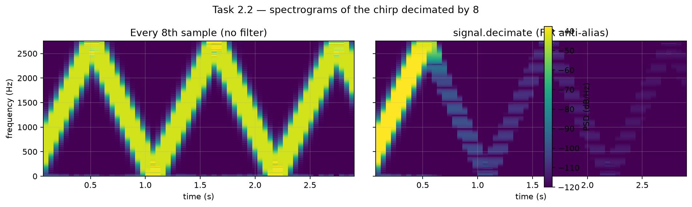signal.decimate (right).
In the unfiltered version the sweep reaches 2756 Hz, then folds back and zig-zags between 0 and 2756 Hz for the rest of the record. In the filtered version the sweep stops at the new Nyquist frequency and the rest of the record is almost empty. The zig-zag is the aliasing and it is present over most of the unfiltered signal.
The function 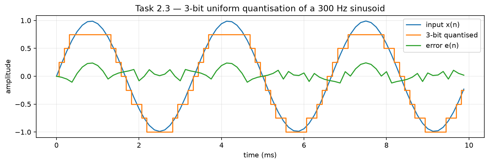quantize() rounds to the nearest multiple of Δ = 2/2B
and clips the result to [−1, 1 − Δ]. A 300 Hz sinusoid of amplitude 0.99 sampled at 8 kHz
(80 samples, three cycles) was quantised to 3 bits, giving Δ = 0.25
(
The SQNR of the same 80-sample sinusoid was measured for B = 2, 4, …, 16 and compared with
the theoretical value ( 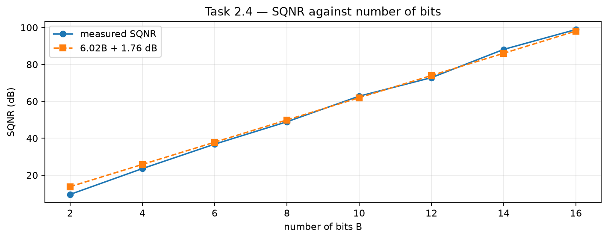
| B (bits) | Measured SQNR (dB) | 6.02B + 1.76 (dB) | Difference (dB) |
|---|---|---|---|
| 2 | 9.60 | 13.80 | -4.20 |
| 4 | 23.58 | 25.84 | -2.26 |
| 6 | 36.81 | 37.88 | -1.07 |
| 8 | 48.93 | 49.92 | -0.99 |
| 10 | 62.81 | 61.96 | +0.85 |
| 12 | 72.84 | 74.00 | -1.16 |
| 14 | 88.13 | 86.04 | +2.09 |
| 16 | 98.91 | 98.08 | +0.83 |
Table 8: Measured and theoretical SQNR.
A straight-line fit through B = 4 to 16 gives a slope of 6.30 dB per bit, against the theoretical 6.02 dB per bit. For B ≥ 4 the measured values are within about 2.3 dB of the formula; the scatter arises because the record contains only 80 samples, so the error is not a perfectly uniform noise. At B = 2 the measured value is low because the positive peaks are clipped. The theoretical value is also reduced by about 0.09 dB because the amplitude is 0.99 and not 1.
A 4.7 s speech-like signal at 16 kHz, normalised to a peak of 1, was quantised to 4, 8 and 12 bits. A 440 Hz sine of amplitude 0.999 was quantised in the same way for comparison (Table 9). The speech-like signal has a crest factor (peak/RMS) of 13.2, compared with 1.41 for a sine.
| B (bits) | Speech-like signal (dB) | Full-scale sine (dB) | 6.02B + 1.76 (dB) | Gap (dB) |
|---|---|---|---|---|
| 4 | 10.7 | 23.3 | 25.8 | 12.5 |
| 8 | 30.6 | 50.1 | 49.9 | 19.6 |
| 12 | 54.6 | 73.8 | 74.0 | 19.2 |
Table 9: SQNR of a speech-like signal and of a full-scale sine.
The speech-like signal has an SQNR about 20 dB lower than the sine at 8 and 12 bits. This matches the crest-factor penalty 20 log10(crest/√2) = 19.4 dB: the step Δ is fixed by the peak, but the average signal power is much lower, so the noise is large compared with the signal. At 4 bits the gap is smaller because Δ is so large that much of the signal falls below one step and the quantisation error is no longer uniform. The same reasoning applies to real speech, which has pauses and a high peak-to-RMS ratio.
The function conv(x, h) implements the double sum. It returned
[1 3 6 6 4 1] for x = {1, 2, 3, 1} and h = {1, 1, 1}, the expected result, and the same as
np.convolve. The pre-lab sequences gave the expected result with both functions.
Two random sequences of length 2000 were then convolved with both functions and timed with
time.perf_counter() (Table 11); the results agreed
(np.allclose = True).
| Function | Time for L = M = 2000 | Multiplications |
|---|---|---|
| conv (Python double loop) | 10.255 s | L·M = 4 000 000 |
| np.convolve | 3.12 ms | L·M = 4 000 000 |
| Ratio | ≈ 3283× faster | same |
Table 11: Timing of the two implementations (times depend on the computer used).
The signal x(n) = sin(2πn/50) + 0.5w(n), with Gaussian noise w(n), was convolved with
moving-average filters h(n) = (1/M){1, …, 1} for M = 3, 9 and 25 using 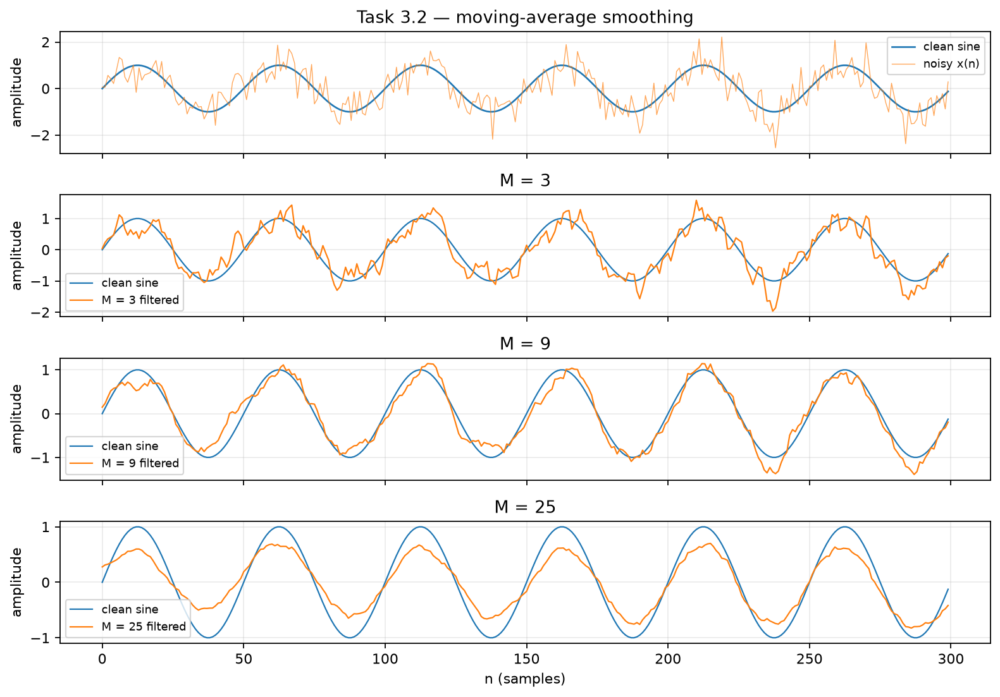mode="same"
(
| Filter | Gain at the 50-sample period | RMS error against the clean sine |
|---|---|---|
| noisy x(n) | 1.000 | 0.509 |
| M = 3 | 0.995 | 0.304 |
| M = 9 | 0.948 | 0.187 |
| M = 25 | 0.637 | 0.271 |
Table 12: Effect of the moving-average length.
M = 3 removes little noise. M = 9 gives the lowest error and reduces the amplitude of the sine by a few per cent. M = 25 removes more noise but attenuates the wanted sine, so the total error rises again. A longer filter therefore gives more noise reduction but more distortion of the wanted signal.
Each system was tested with two random sequences, a = 2 and b = −3, and with an input delayed by 5 samples (Table 13).
| System | Linear | Time-invariant | LTI |
|---|---|---|---|
| x^2 | no | yes | no |
| n x(n) | yes | no | no |
| moving average | yes | yes | yes |
Table 13: Numerical test of the three systems.
The squarer fails the superposition test because (ax1 + bx2)2 contains a cross term 2abx1x2, but it is time-invariant because it acts on each sample in the same way. The system n·x(n) is linear but not time-invariant: delaying the input by n0 gives n·x(n − n0), whereas the delayed output is (n − n0)·x(n − n0). The 3-point moving average is a weighted sum with constant coefficients and is therefore both linear and time-invariant.
A noise-free signal of 500 samples was delayed by 37 samples, scaled by 0.6 and corrupted
with Gaussian noise. The cross-correlation of the received and transmitted signals peaks at
lag 37 for σ = 0.5 ( 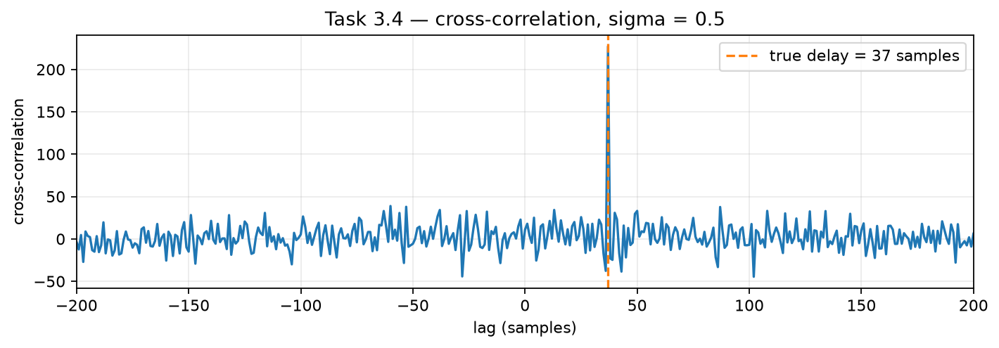
The noise standard deviation was then increased. The single run with the specified seed is shown together with the fraction of 300 independent trials in which the true delay of 37 samples was found (Table 14).
| Noise σ | Estimated delay (samples) | Success rate (300 trials) |
|---|---|---|
| 0.5 | 37 | 100% |
| 1 | 37 | 100% |
| 2 | 37 | 100% |
| 4 | 87 | 68% |
| 8 | 87 | 15% |
| 16 | 87 | 3% |
Table 14: Delay estimate against noise level.
The estimate was correct for σ = 0.5, 1 and 2 in the single run and in every one of the 300 trials. At higher noise the single run already failed and the success rate falls. The peak of the correlation is about 0.6 × 500 = 300, while the noise contributes a random level of about σ√500 ≈ 22σ, so the peak is lost once σ is of the order of 4 to 8. A delay of 37 samples at fs = 1000 Hz is 37 ms, which for a sound pulse at 343 m/s corresponds to a distance of 12.7 m.
For y(n) − 0.75y(n − 1) + 0.125y(n − 2) = x(n) + x(n − 1) the impulse response was computed
for 0 ≤ n ≤ 9 in three ways: by direct recursion in a for loop, with
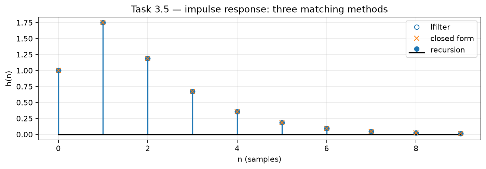 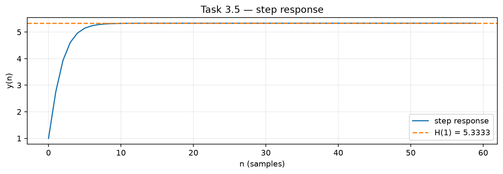signal.lfilter([1, 1], [1, −0.75, 0.125], impulse), and from the closed form
h(n) = 6(0.5)n − 5(0.25)n. All three agree (lfilter and the closed form.np.allclose = True for both comparisons). The step response, computed with
lfilter, settles at 5.3333 (
| n | 0 | 1 | 2 | 3 | 4 | 5 | 6 | 7 | 8 | 9 |
|---|---|---|---|---|---|---|---|---|---|---|
| h(n) | 1.0000 | 1.7500 | 1.1875 | 0.6719 | 0.3555 | 0.1826 | 0.0925 | 0.0466 | 0.0234 | 0.0117 |
Table 15: Impulse response h(n) for 0 ≤ n ≤ 9 (identical for the three methods).
The function 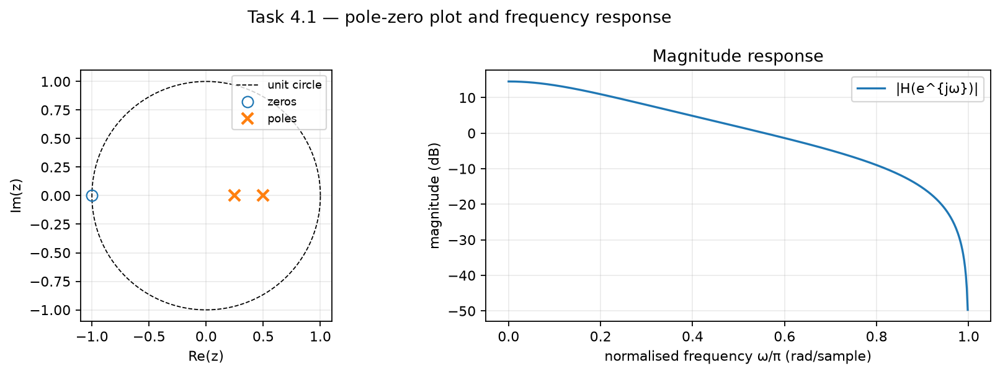zplane(b, a) was written using signal.tf2zpk and applied
to H(z) = (1 + z−1)/(1 − 0.75z−1 + 0.125z−2). It has a zero
at z = −1 and poles at z = 0.50, 0.25; all poles satisfy |p| < 1, so the printed test gave
True (
signal.residuez was applied to 1/(1 − 0.75z−1 + 0.125z−2)
and the resulting sum of residues times pn was compared with the impulse response
from lfilter for n = 0 to 9. The same was done for b = [1, 1] (Table 16).
| Numerator | Pole 0.25: residue | Pole 0.5: residue | Σripin equals lfilter? |
|---|---|---|---|
| [1] | -1 | 2 | yes |
| [1, 1] | -5 | 6 | yes |
Table 16: Residues from signal.residuez and comparison with lfilter.
The residues for the numerator 1 are 2 (at p = 0.5) and −1 (at p = 0.25), which equals the partial-fraction expansion of the pre-lab question (b). For b = [1, 1] they are 6 and −5, which confirms h(n) = 6(0.5)n − 5(0.25)n, the closed form used in Task 3.5.
For a pole pair at p = re±jπ/4, that is
A(z) = 1 − 2r cos(π/4)z−1 + r2z−2, h(n) (40 samples) and
|H(ejω)| were plotted for r = 0.5, 0.8, 0.95, 1.0 and 1.05 ( 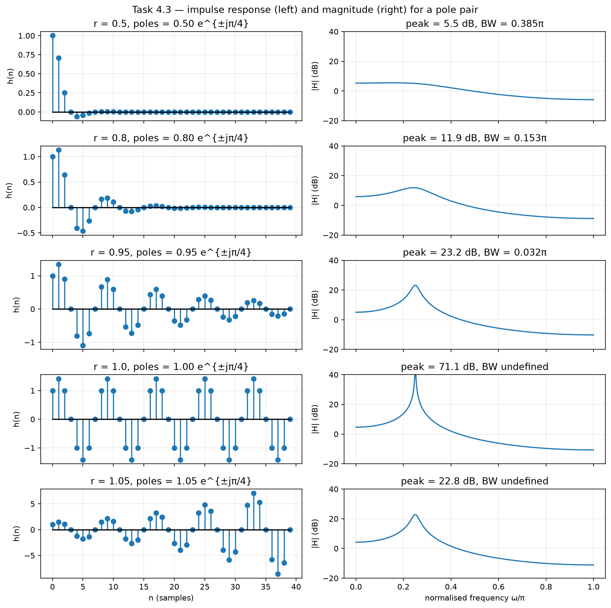
| r | Poles | Peak |H| (dB) | −3 dB bandwidth (×π rad) | max |h(n)|, 30 ≤ n ≤ 39 | Stable |
|---|---|---|---|---|---|
| 0.5 | 0.50 (angle ±45°) | 5.5 | 0.385 | 0 | yes |
| 0.8 | 0.80 (angle ±45°) | 11.9 | 0.153 | 0.0012 | yes |
| 0.95 | 0.95 (angle ±45°) | 23.2 | 0.032 | 0.26 | yes |
| 1 | 1.00 (angle ±45°) | 71.1 | — | 1.41 | no |
| 1.05 | 1.05 (angle ±45°) | 22.8 | — | 8.6 | no |
Table 17: Effect of the pole radius r.
As r increases from 0.5 to 0.95 the impulse response still oscillates at the same rate (θ = π/4) but decays more slowly, and the resonance peak at ω = π/4 becomes taller and narrower. The bandwidth follows the approximation 2(1 − r) rad. For r = 1.0 the response is a sustained sinusoid of constant amplitude and the peak of |H| is infinite. For r = 1.05 the response grows as 1.05n. The values r = 1.0 and r = 1.05 are therefore not BIBO stable; r = 1.0 is marginally stable.
The four systems were classified with 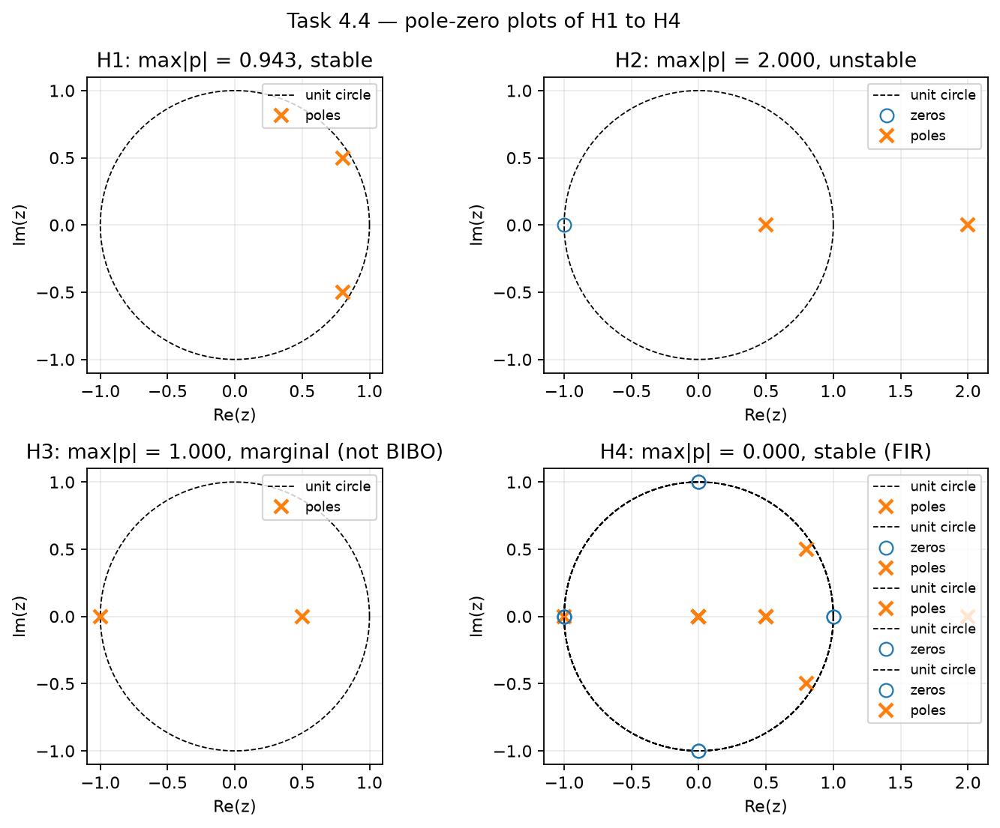zplane (
| System | Poles | max |p| | max |h(n)|, n ≥ 150 | Σ|h(n)|, n < 200 | Classification |
|---|---|---|---|---|---|
| H1 | 0.800+0.500j, 0.800-0.500j | 0.943 | 0.000236 | 21.8 | stable |
| H2 | 2.000+0.000j, 0.500+0.000j | 2.000 | 1.61e+60 | 3.21e+60 | unstable |
| H3 | -1.000+0.000j, 0.500+0.000j | 1.000 | 0.667 | 134 | marginal (not BIBO) |
| H4 | 0.000+0.000j, 0.000+0.000j, 0.000+0.000j, 0.000+0.000j | 0.000 | 0 | 2 | stable (FIR) |
Table 18: Stability classification and check of the impulse response.
H1 has poles at 0.80 ± j0.50 (radius 0.943) and is stable; its impulse response decays slowly. H2 has poles at 2 and 0.5; the pole at z = 2 is outside the unit circle, so h(n) grows without bound and the zero at z = −1 does not cancel it. H3 has poles at 0.5 and −1: the pole at z = −1 is on the unit circle, and h(n) = (1/3)(0.5)n + (2/3)(−1)n neither decays nor grows, but Σ|h(n)| increases by about 2/3 per sample, so the system is not BIBO stable. H4 = 1 − z−4 is an FIR filter with h(n) = {1, 0, 0, 0, −1}; its poles are all at z = 0, so it is always stable.
A resonator peaking at 1 kHz for fs = 8 kHz was designed with poles at
re±jθ, r = 0.97 and θ = 2π·1000/8000 = π/4, so
A(z) = 1 − 1.3718z−1 + 0.9409z−2. Zeros at z = ±1 give B(z) = 1 − z−2,
which was scaled to give unit gain at the peak. The result is in 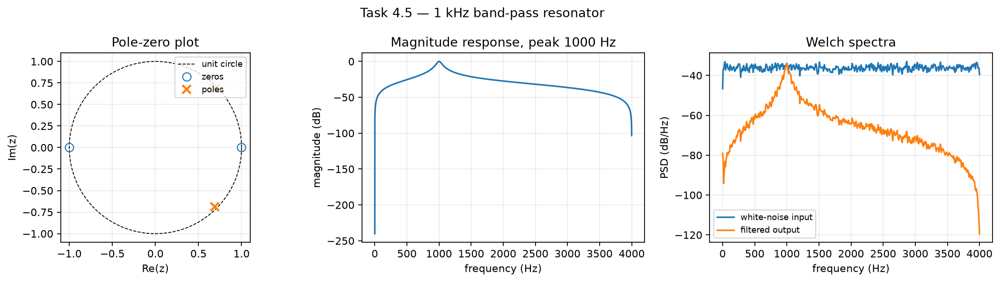
| Quantity | Value |
|---|---|
| Peak frequency | 1000 Hz |
| −3 dB bandwidth | 77 Hz (approximation 2(1 − r)fs/2π = 76 Hz) |
| Gain at 0 Hz and at 4 kHz | 0.0e+00 and 6.8e-06 (zeros) |
| Peak of Welch spectrum of the filtered noise | 1000 Hz |
Table 19: Properties of the resonator.
White noise (8000 samples, fs = 8 kHz) has a flat spectrum, while the filtered
output is concentrated in a narrow band around 1 kHz and is strongly reduced near 0 Hz and
4 kHz. The output can also be played with Audio(y, rate=8000) to hear the
narrow-band tone-like noise.
Three devices containing DSP and the signal each processes: a smartphone (speech from the microphone: noise reduction and coding); a digital audio system (audio stream: equalisation); a Wi-Fi router (radio signal: modulation and demodulation).
(a) A 7 kHz tone sampled at 10 kHz appears at |7 − 10| = 3 kHz. (b) For an 8-bit quantiser with a ±1 V range, Δ = 2/28 = 7.8125 mV. The theoretical SQNR is 6.02 × 8 + 1.76 = 49.9 dB.
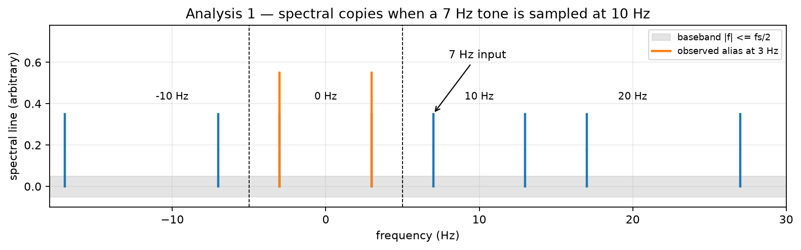
(a) The convolution of x = {1, −1, 2} with h = {2, 1, 0, 1} is {2, −1, 3, 3, −1, 2}. (b) For y(n) = n·x(n), the response to the delayed input x(n − n0) is n·x(n − n0), but the delayed output is (n − n0)·x(n − n0). They differ for n0 ≠ 0, so the system is not time-invariant.
np.convolve. Both methods need L·M multiplications,
so the number of operations is the same. np.convolve is faster because the loops
run in compiled C code on whole arrays, whereas the Python double loop is interpreted and
has overhead on every single multiplication.(a) The denominator 1 − 0.9z−1 + 0.81z−2 gives z2 − 0.9z + 0.81 = 0, so z = 0.45 ± j0.779 = 0.9e±jπ/3. The magnitude is 0.9 < 1, so the system is stable. (b) X(z) = 2/(1 − 0.5z−1) − 1/(1 − 0.25z−1), which agrees with the residues in Table 16.
In Lab 0, elementary discrete-time sequences were generated and plotted in Python and Octave. The sequence anu(n) decays for |a| < 1 and grows for a > 1, and the growing case corresponds to an unstable impulse response. Both cos(2πn/8) and cos(2πn/7.5) were shown to be periodic, with periods of 8 and 15 samples respectively. A 4.70 s audio signal sampled at 16,000 Hz (75,200 samples) was loaded, normalised and displayed.
In Lab 1A, aliasing was demonstrated for a 7 Hz tone and the alias frequencies agreed with
|F − kfs| (3 Hz at 10 Hz, 5 Hz at 12 Hz). Decimating a chirp without a filter folded
the whole sweep into the band, while signal.decimate removed everything above
the new Nyquist frequency. The uniform quantiser gave an SQNR that rises by about
6.3 dB per bit, in agreement with 6.02B + 1.76 for a
full-scale sine, and a speech-like signal had an SQNR about 20 dB lower because of its high
crest factor.
In Lab 1B, linear convolution was implemented from its definition and matched
np.convolve, which was about 3283 times faster on
the same data. Moving-average smoothing showed the trade-off between noise reduction and
distortion. Of the three systems tested, only the moving average is LTI. Cross-correlation
found the 37-sample delay (12.7 m for a sound pulse) up to a noise level of
σ = 2 and failed at larger noise levels. The impulse response of the difference equation was
identical by recursion, lfilter and the closed form, and the step response settled
at H(1) = 5.333.
In Week 4, the poles and zeros of H(z) were found and plotted, and the residues from
residuez reproduced the impulse response from lfilter and the closed
form h(n) = 6(0.5)n − 5(0.25)n. Moving a pole pair towards the unit circle
made the resonance sharper and the impulse response longer, and poles on or outside the
circle gave a non-decaying or growing response. Of the four systems tested, H1 and H4 are
stable, H2 is unstable and H3 is marginal. A band-pass resonator with its peak at
1000 Hz (−3 dB bandwidth about 77 Hz) was designed with
r = 0.97 and zeros at z = ±1.
All objectives of the four laboratories were met.
AI tool used: OpenCode (model Big Pickle). Used for:
drafting the code and the text of this report and of the four notebooks. Verification:
all four notebooks were restarted and run from top to bottom. In Lab 0 the plots were compared
with the expected results in the laboratory manual and the periodicity of the cosines was
checked numerically. In Lab 1A the alias frequencies were compared with |F − kfs| and
the SQNR values with 6.02B + 1.76 and with the crest-factor correction. In Lab 1B
conv was compared with np.convolve and with the expected result
{1, 3, 6, 6, 4, 1}, the three impulse responses were compared with each other, and the delay
estimate was compared with the known delay of 37 samples. In Week 4 the residues were compared
with the hand partial-fraction expansion, pole positions were compared with hand calculation
of the roots, stability results were checked with the stability triangle, and the resonator
peak and bandwidth were checked against 2(1 − r). The speech-like audio stand-in is declared
in Section 3. I can explain every line of the submitted code.
n = -5:10;
delta = double(n == 0);
step = double(n >= 0);
ramp = n .* step;
expo = 0.8.^n .* step;
subplot(1,4,1); stem(n, delta); title('delta(n)'); xlabel('n');
subplot(1,4,2); stem(n, step); title('u(n)'); xlabel('n');
subplot(1,4,3); stem(n, ramp); title('r(n)'); xlabel('n');
subplot(1,4,4); stem(n, expo); title('(0.8)^n u(n)'); xlabel('n');def alias_freq(f0, fs):
k = round(f0 / fs)
return abs(f0 - k * fs), k
def quantize(x, bits, full_scale=1.0):
delta = 2 * full_scale / 2**bits
q = np.round(x / delta) * delta
return np.clip(q, -full_scale, full_scale - delta)
def sqnr_db(x, xq):
return 10 * np.log10(np.sum(x**2) / np.sum((x - xq)**2))
def chirp_signal(fs=44100, T=3):
t = np.arange(0, T, 1 / fs)
return fs, 0.5 * signal.chirp(t, 200, T, 15000)
def speech_like(fs=16000, T=4.7, seed=3):
rng = np.random.default_rng(seed)
t = np.arange(0, T, 1 / fs)
env = np.zeros_like(t)
for centre, width, amp in [(0.9, 0.18, 0.7), (1.5, 0.15, 0.5),
(2.3, 0.22, 1.0), (3.0, 0.20, 0.8),
(3.8, 0.25, 0.45)]:
env += amp * np.exp(-0.5 * ((t - centre) / width) ** 2)
f0 = 110 + 25 * np.sin(2 * np.pi * 0.4 * t)
phase = 2 * np.pi * np.cumsum(f0) / fs
voiced = sum(np.sin(k * phase) / k**0.8 for k in range(1, 30))
b, a = signal.butter(2, [300, 2500], btype="band", fs=fs)
voiced = signal.lfilter(b, a, voiced)
b2, a2 = signal.butter(2, 1500, btype="high", fs=fs)
noise = signal.lfilter(b2, a2, rng.standard_normal(len(t)))
x = env * voiced + 0.02 * noise + 0.1 * env * noise
return fs, x / np.max(np.abs(x))def conv(x, h):
N = len(x) + len(h) - 1
y = np.zeros(N)
for n in range(N):
for k in range(len(x)):
if 0 <= n - k < len(h):
y[n] += x[k] * h[n - k]
return y
systems = {"x^2": lambda x: x**2,
"n x(n)": lambda x: np.arange(len(x)) * x,
"moving average": lambda x: np.convolve(x, np.ones(3)/3)[:len(x)]}
def delay_estimate(sigma, seed=1, true_delay=37, N=500):
rng = np.random.default_rng(seed)
x = rng.standard_normal(N)
y = np.concatenate([np.zeros(true_delay), 0.6 * x])[:N] + sigma * rng.standard_normal(N)
r = signal.correlate(y, x, mode="full")
lags = signal.correlation_lags(len(y), len(x), mode="full")
return int(lags[np.argmax(r)]), lags, r
b, a = [1, 1], [1, -0.75, 0.125]
imp = np.zeros(10); imp[0] = 1
h_rec = np.zeros(10)
for n in range(10):
h_rec[n] = imp[n] + (imp[n-1] if n >= 1 else 0)
h_rec[n] += 0.75 * (h_rec[n-1] if n >= 1 else 0) - 0.125 * (h_rec[n-2] if n >= 2 else 0)
h_lf = signal.lfilter(b, a, imp)
h_cf = 6 * 0.5**np.arange(10) - 5 * 0.25**np.arange(10)
step = signal.lfilter(b, a, np.ones(60))def zplane(b, a, ax=None, extra_poles_at_origin=0):
z, p, k = signal.tf2zpk(b, a)
p = np.concatenate([p, np.zeros(extra_poles_at_origin)])
ax = ax or plt.gca()
th = np.linspace(0, 2*np.pi, 400)
ax.plot(np.cos(th), np.sin(th), "k--", lw=0.8, label="unit circle")
ax.plot(z.real, z.imag, "o", mfc="none", label="zeros")
ax.plot(p.real, p.imag, "x", label="poles")
ax.set_aspect("equal"); ax.legend(); ax.set_xlabel("Re(z)"); ax.set_ylabel("Im(z)")
return z, p
def inverse_check(b, a, N=10):
r, p, k = signal.residuez(b, a)
n = np.arange(N)
h_pf = sum(ri * pi**n for ri, pi in zip(r, p)).real
imp = np.zeros(N); imp[0] = 1
h_lf = signal.lfilter(b, a, imp)
return r, p, h_pf, h_lf
SYS4 = {"H1": ([1], [1, -1.6, 0.89]),
"H2": ([1, 1], [1, -2.5, 1]),
"H3": ([1], [1, 0.5, -0.5]),
"H4": ([1, 0, 0, 0, -1], [1])}
def classify(b, a, N=200):
z, p = zplane(b, a)
imp = np.zeros(N); imp[0] = 1
h = signal.lfilter(b, a, imp)
rmax = float(np.max(np.abs(p))) if len(p) else 0.0
return z, p, h, rmax, float(np.max(np.abs(h[150:]))), float(np.sum(np.abs(h)))
r, p = 0.97, 2*np.pi*1000/8000
a_res = [1, -2*r*np.cos(p), r**2]
b_res = [1, 0, -1]
w, H = signal.freqz(b_res, a_res, worN=8192, fs=8000)
b_res = (np.array(b_res) / np.max(np.abs(H))).tolist()
x = np.random.default_rng(0).standard_normal(8000)
y = signal.lfilter(b_res, a_res, x)